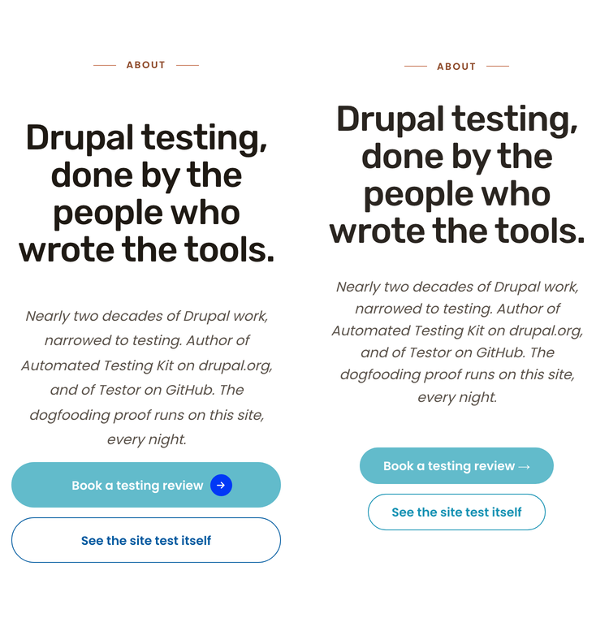
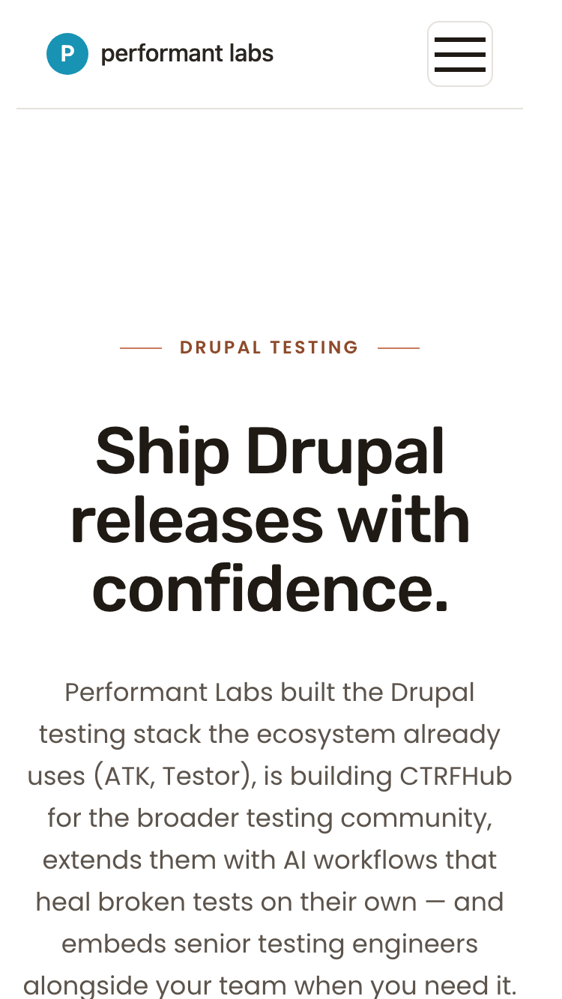
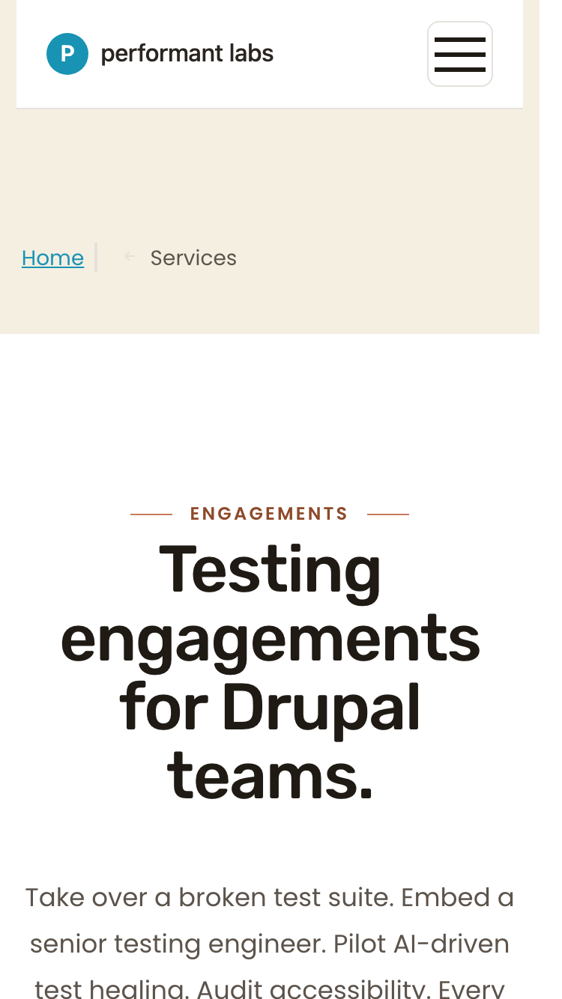
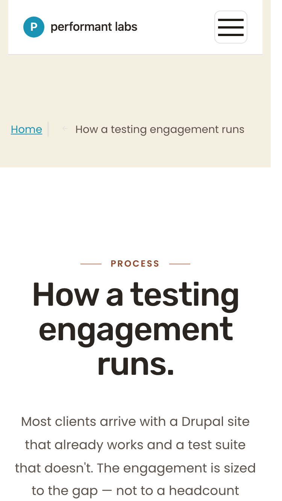
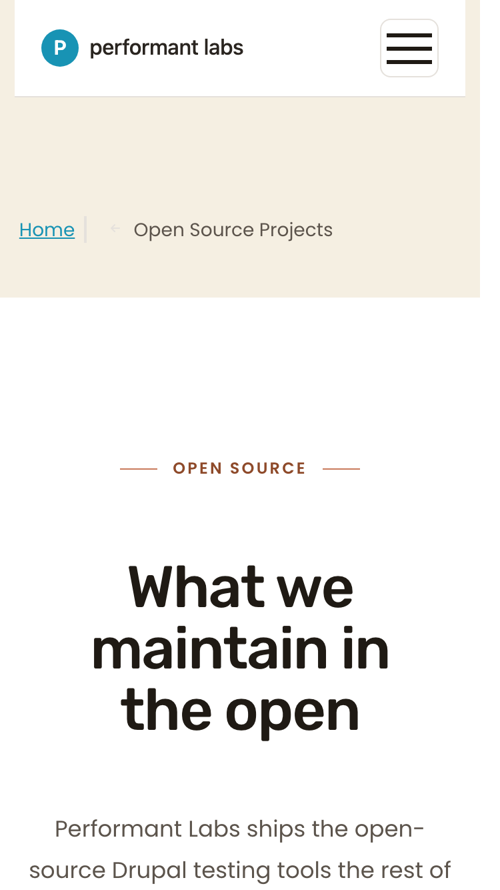

-1 px letter-spacing the brief calls for. Everything below it has shifted down by roughly the headline’s extra height.-2 px tracking, Rubik 500 — matches Cycle 2’s state./, /services, /how-we-do-it, /open-source-projects). All five landing-page heroes now render with identical typography (44 px, Rubik 500, -1 px, line-height 1.05) at 375 px. CTAs are stacked. No horizontal scroll anywhere.text-wrap: balance active. /about-us itself is fine. These orphans are pre-existing from Sprint 4 Cycle 3’s FU-2 work, NOT introduced by Cycle 3. Worth a future cleanup.
Visible differences: live renders a chevron glyph after “Book a testing review”; preview omits it. Pre-existing Drupal button-template behavior — not introduced this cycle. Typography, color, spacing, and stacking otherwise match.
| Property | Brief (typography-mobile) | Live | Match |
|---|---|---|---|
| font-size | 44 px (display-xl mobile) | 44 px | YES |
| font-family | Rubik | Rubik, sans-serif | YES |
| font-weight | 500 | 500 | YES |
| letter-spacing | -1 px (mobile relaxation from desktop -2 px) | -1 px | YES |
| line-height | 1.05 | 46.2 px (= 44 × 1.05) | YES |
| text-wrap | balance | balance | YES |
| last-line orphan? | no single-word orphans | “wrote the tools.” (3 words) | PASS |
| horizontal scroll? | none | none (docW 360 < winW 375) | PASS |
| Property | Brief desktop | Live (1280) | Match |
|---|---|---|---|
| font-size | 72 px (display-xl desktop) | 72 px | YES |
| letter-spacing | -2 px | -2 px | YES |
| line-height | 1.05 | 75.6 px (= 72 × 1.05) | YES |
| font-weight | 500 | 500 | YES |
| horizontal scroll? | none | none (docW 1265 < winW 1280) | PASS |
Desktop output is identical to Cycle 2's verified state — the Canvas marker activates the existing dy-section.css FU-2 desktop rule (72 px) AND mobile rule (44 px) in one move.




| Page | H1 font-size | Letter-spacing | H1 wrap (last line) | CTAs at 375 | Horizontal scroll | Status |
|---|---|---|---|---|---|---|
| / | 44 px | -1 px | “confidence.” orphan | 2 CTAs full-width-stacked, 56 px tall | none | No regression (orphan pre-existing) |
| /services | 44 px | -1 px | “teams.” orphan | 2 CTAs full-width-stacked, 56 px tall | none | No regression (orphan pre-existing) |
| /how-we-do-it | 44 px | -1 px | “runs.” orphan | (no CTAs in hero) | none | No regression (orphan pre-existing) |
| /open-source-projects | 44 px | -1 px | “the open” (2 words) | (no CTAs in hero) | none | MATCH |
| /about-us | 44 px (was 36 px in Cycle 1) | -1 px | “wrote the tools.” (3 words) | 2 CTAs full-width-stacked, 56 px tall | none | FIXED — intended change |
| Section | Viewport | Status | Description |
|---|---|---|---|
| Hero (§A) — /about-us | 375 | REWORK COMPLETE | H1 raised 36 → 44 px as intended; wraps to 4 lines, no orphan, no overflow. |
| Hero (§A) — /about-us | 1280 | MATCH | Desktop H1 unchanged at 72 px / -2 px / Rubik 500. |
| Closing CTA (§E) — /about-us | 1280/375 | MATCH | Cycle 2 already addressed; tokens preserved on the integration branch. |
| Hero — /, /services, /how-we-do-it, /open-source-projects | 375 | NO REGRESSION | 44 px H1 unchanged (these pages were already at 44 px before this cycle); CTA stacking and horizontal-scroll behavior unchanged. |
| Check | Result | Notes |
|---|---|---|
| Heading hierarchy | PASS | Single H1; H1 → H2 → H3. (T2-7, T2-8) |
| H1 contrast (44 px Rubik 500 on white) | PASS (AAA) | 17.27:1 vs 3:1 large-text threshold. No color change in this cycle. |
| Image alt text | PASS | No new images; Cycle 1 alts retained. |
| Touch targets at 375 | PASS | Hero CTAs 56 px tall, full-width (above 44 px threshold). |
| Mobile typography scale | PASS | Now matches typography-mobile display-xl block exactly (44 / -1 / 1.05). |
| Mobile layout / horizontal scroll | PASS | No horizontal scroll at 375 across all five landing pages. |
| Forced-colors / reduced-motion / 200% zoom / keyboard nav / focus rings | No delta vs Cycle 1 | No interactive elements or transitions added; chrome unchanged. Refer to Sprint 14 Cycle 1 audit enumeration. |
text-wrap: balance is active and still cannot avoid them given long single words at 375 px. Memory feedback_no_orphan_words.md says no orphans; current state predates this cycle. Recommend a copy-edit pass on those three H1 strings, OR a typographic hyphenation/break-hint pass in a separate sub-issue. Not blocking for Cycle 3 (which is /about-us-scoped).